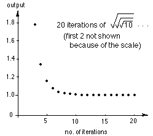

Sqrt(sqrt(sqrt(...x)
Iterating the square root of a number.
Use a calculator. This is the graph of iterating the square root of 10. 
A program in Basic, to get 19 iterations,
would be:
We get an infinite sequence that approaches 1.
Try other numbers. Try negative numbers. Try complex numbers. What happens?